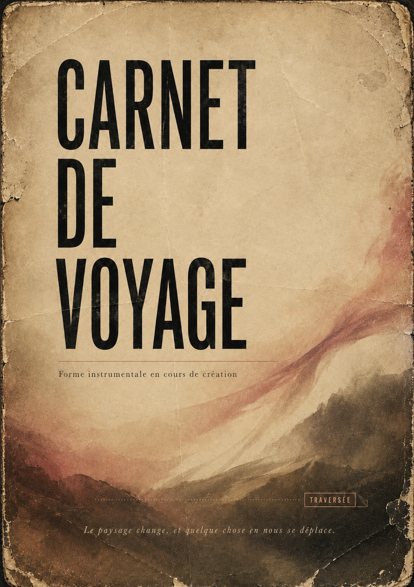

Le déplacement
Carnet de voyage
Recherche musicale en cours

Le projet
Carnet de voyage est une recherche autour du piano, des matières électroniques et du déplacement. À partir de compositions instrumentales, de paysages sonores et de séquences ouvertes à l’improvisation, le projet explore une forme de cinéma sans écran : un voyage construit en direct, entre geste vivant, rythmes, couleurs et transformations du son.
La forme scénique est actuellement en cours d’expérimentation.
Écouter
Fragment de recherche
Extrait de travail — piano, électronique et improvisation.